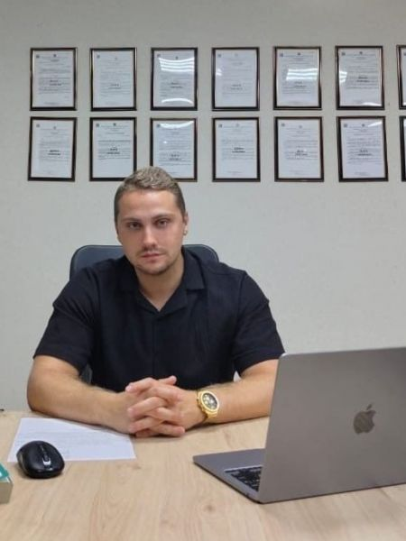

Разбираемся в ситуации
Обсуждаем долги, доходы, имущество и ваши главные вопросы.
Центр банкротства «Правовой Альянс»
Понятный план выхода из долгов.
Разберём вашу ситуацию и объясним,
какие решения можно рассмотреть.
Сначала оценка ситуации и рисков. Затем — ваше решение.
Кузьмин Иван Сергеевич
Директор · член Ассоциации юристов России
С чего начнём
Выберите похожую ситуацию.
Начнём с того, что важно именно вам.
У каждой ситуации свои обстоятельства. Универсального решения нет.
Помогите выбрать услугуПредварительная анкета
Без телефона и личных данных.
Подскажем, что подготовить к консультации.
Первая консультация — бесплатно
Порядок работы
Объясняем действия, документы и сроки.
Решения принимаем вместе с вами.
Обсуждаем долги, доходы, имущество и ваши главные вопросы.
Объясняем варианты и риски. Фиксируем услуги и стоимость в договоре.
Работаем с документами, объясняем ход процедуры и следующие действия.
Передаём итоговые документы и разбираем дальнейшие вопросы.
Фактическая длительность зависит от документов, имущества, требований кредиторов и хода дела. Индивидуальный план обсудим до заключения договора.
Познакомимся
Юридическое сопровождение
и финансовый анализ.

Банкротство и арбитражные споры.
Член Ассоциации юристов России.
Анализ финансового состояния
организаций.
Состав специалистов, которые будут работать с вашей ситуацией, уточним на консультации.
Практика компании
Судебные акты по делам
в разных регионах.
Удмуртская Республика
Открыть документУдмуртская Республика
Открыть документРеспублика Татарстан
Открыть документПримеры дел не гарантируют аналогичный результат. Он зависит от обстоятельств конкретного дела.
Отзывы о работе
Отзывы о компании на Яндекс Картах.
Можно прочитать полные тексты и ответы организации.
Всегда были на связи.
Светлана К. · Яндекс Карты
Читать отзывПрофессионалы своего дела!
Алёна Б. · Яндекс Карты
Читать отзывКоманда сильная, всегда на связи.
Илья К. · Яндекс Карты
Читать отзывСтоимость и условия
До договора обсуждаем состав работы,
условия оплаты и возможные расходы.
Чтобы понять ситуацию и обсудить возможные дальнейшие действия.
Записаться на консультациюПолная стоимость, число платежей и расходы согласуются до договора.
Перед обращением
Спрашивайте о том, что важно именно вам.
Для первого разговора не нужно знать
юридические термины.
Можно начать с описания ситуации: какие есть долги, доходы и имущество. На консультации уточним, какие сведения и документы понадобятся дальше.
Да. Формат первого разговора и дальнейшего обмена документами согласуем отдельно.
Это один из вопросов для индивидуального разбора. Сообщите об ипотеке, имуществе и недавних сделках: без этих сведений нельзя оценить вашу ситуацию.
Ориентир — около шести месяцев. Срок может меняться в зависимости от обстоятельств дела. До начала работы обсудим этапы и возможные причины задержек.
Условия ипотечного договора, платежи, задолженность и другие обязательства. Возможные варианты оцениваются индивидуально: сохранение жилья нельзя обещать без изучения документов.
Обсудим состав услуг и расходы применительно к вашей ситуации. Перед подписанием договора важно уточнить общую стоимость, порядок оплаты и что входит в сопровождение.
На первом разговоре вы знакомитесь со специалистом и получаете информацию. Решение о дальнейшем сотрудничестве принимаете после обсуждения условий.
Бесплатная первичная консультация
Начнём с разговора. Обсудим ситуацию,
возможные варианты и вопросы к документам.